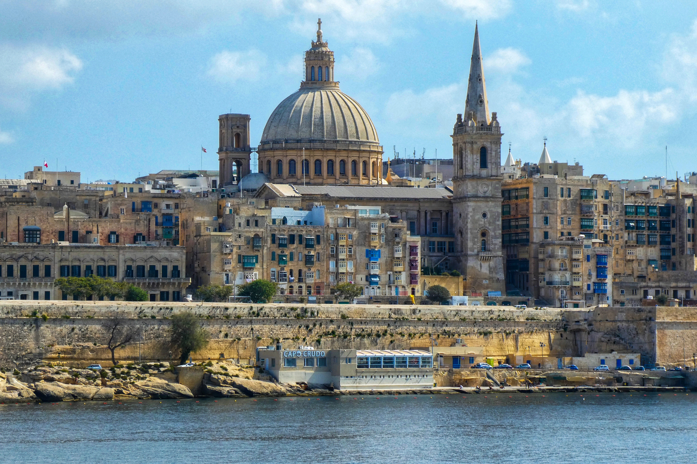
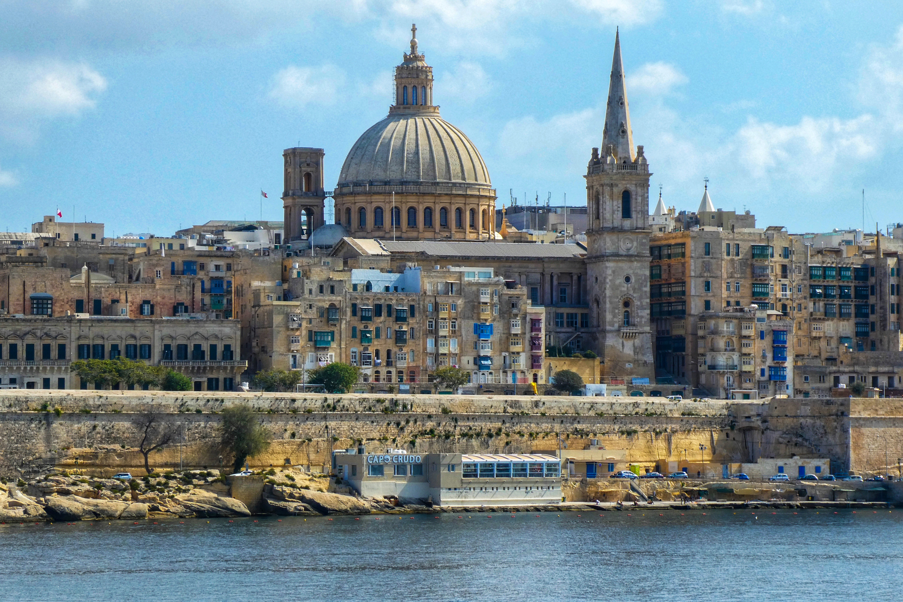
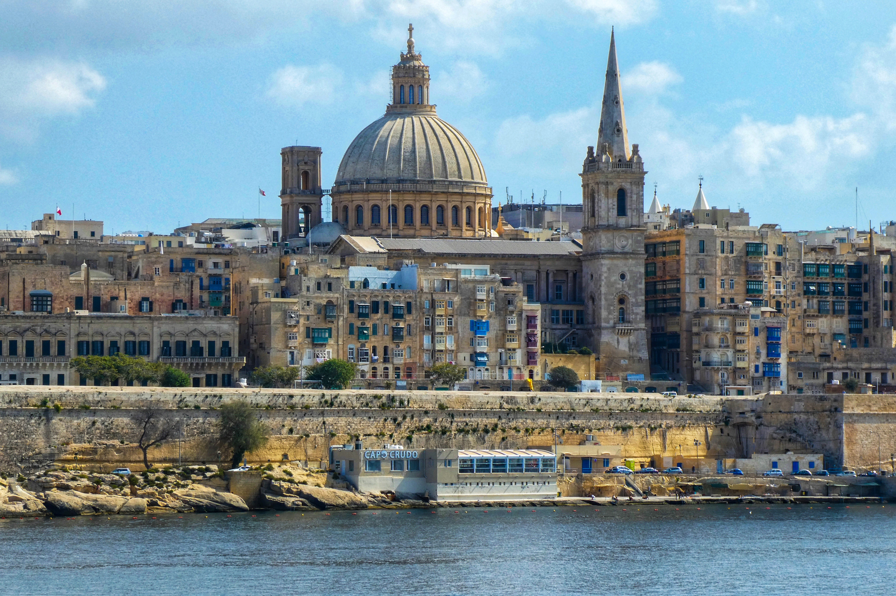

Fino ad ora, ho avuto il piacere di visitare ogni piccolo angolo del nostro valoroso "stivale" e di esplorare altri meravigliosi paesi come: Spagna, Francia, Repubblica Ceca, Malta, Tunisia, Turchia, Grecia e Croazia.
